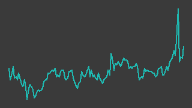

キタック（4707）
東証スタンダード／レポート更新 2026-09-04
記述の裏取り 35/58件が裏付けあり／23件は未確認・要修正（検証 2026-08-31）
決算短信・開示情報 ↗会社概要 ↗株探 ↗

画像判定※・6か月・基準日 2026-09-03一行でいうと：新潟を地盤とする総合建設コンサルタント。売上のおよそ9割†は官公庁向けの地質調査・土木設計で、国の年度末に納品が寄るため2〜4月期に利益が集中し5〜7月期は赤字になる。時価総額は21億円程度※・1株純資産に対して0.5倍台※と小さく安いが、2026年10月期は第3四半期までの受注高が前年同期比14.6%減†で、通期計画の営業利益は残り1四半期に4割弱を残している。
週次アップデート最新 2026-W36・全 2 件
新しい週を上に置いている。過去の記述は書き換えず、そのまま残している。
2026-W36（続報）
第3四半期減益発表後の軟調地合いが続く
- 株価: 週間 -6.3%（365→342円・採用終値ベース、照合成立 4日、週内 333〜342円）
- 出来高: 前週比 -16.5%（今週 332,800株／前週 398,800株）※／信用倍率: 42.19倍（買残 156.1千株・売残 3.7千株、08/28時点）※
- 判定: 「流動性低」／開示: なし
（解釈）先週公表の第3四半期累計減益（台帳に既報・記録済み）を受けた地合いの弱さが続いていると読める 今週分の新規開示・ニュースは確認できていない
次週に見ること: ① 流動性ゲートの解消・出来高の回復を引き続き確認する
2026-W36（2026-08-31 週）
（台帳への新規登録週。先週は名証メインへの重複上場・記念優待・第3四半期決算が3日続けて出た）
- スクリーニング起点で登録した銘柄（楽天証券「成長株0830（per）」2026-08-30 19:15 取得の通過10件のうちの1件）。今回が初回レポートで、全節を書き下ろしている
- 8月20日、名古屋証券取引所メイン市場に重複上場した（承認は8月13日）。会社は目的として「西日本地域での認知度を高め、将来の営業エリアとしていく」ことと「投資家層の拡大、株式の流動性の向上」を挙げている（https://kitac.co.jp/wp/wp-content/uploads/2026/08/%E5%90%8D%E5%8F%A4%E5%B1%8B%E8%A8%BC%E5%88%B8%E5%8F%96%E5%BC%95%E6%89%80%E3%83%A1%E3%82%A4%E3%83%B3%E5%B8%82%E5%A0%B4%E3%81%B8%E3%81%AE%E4%B8%8A%E5%A0%B4%E6%89%BF%E8%AA%8D%E3%81%AB%E9%96%A2%E3%81%99%E3%82%8B%E3%81%8A%E3%81%97%E3%82%89%E3%81%9B-1.pdf ・2026-08-31 取得）
- 8月27日、重複上場の記念株主優待を発表。 2026年10月20日現在で100株以上を持つ株主にクオカード1,000円分†、贈呈は2027年1月予定†、今回限りと明記されている†（https://kitac.co.jp/wp/wp-content/uploads/2026/08/20260827.pdf ・2026-08-31 取得）。この日の採用終値は 346円✓（前日 337円✓）で、出来高 72,000株※は直前25営業日平均のおよそ7倍
- 8月28日15時30分、第3四半期決算。 受注高 22.7億円†（前年同期比 14.6%減†）、売上高 24.2億円†（4.9%減†）、営業利益 1.58億円†（4.9%減†）、経常利益 1.74億円†（7.3%減†）、親会社株主に帰属する四半期純利益 1.41億円†（33.7%減†）。通期計画は据え置き†（https://kitac.co.jp/wp/wp-content/uploads/2026/08/20260828.pdf ・2026-08-31 取得）
- 純利益の減り方だけが突出しているのは、前年同期に特別利益として計上した国庫補助金 1.42億円†が今期は 22百万円†にとどまったため。経常段階の減り方（7.3%減†）との差はほぼこれで説明がつく。本業の落ち方は純利益の見出しほど大きくない
- 8月28日の終値は 365円※（yahoo 単独・照合不成立）、出来高 257,700株※は直前25営業日平均の25倍。当台帳の採用終値はまだ 346円✓（8月27日）までしかない
- 週明け8月31日は 336円※（株探・15分ディレイ・2026-08-31 13時37分時点）まで下げた。株探は「第３四半期累計の純利益３４％減」を理由に挙げている（https://kabutan.jp/stock/news?code=4707&b=n202608310263 ・2026-08-31 取得）。優待の権利取りで先に買われた分が決算で戻された、とも読めるが当台帳では確かめていない
次週に見ること：①8月28日の終値が2つの運営で照合され採用値になるか ②信用買残（8月21日で 123.0千株※・売残 0※）が優待の権利日（10月20日）に向けて積み上がるか ③受注高 14.6%減†が第4四半期の売上と通期計画の達成にどう出るか
次期売上・利益推定対象 FY2026-10・作成済み・変数 4 個
作成済み 対象期 FY2026-10・起案 2026-09-05。検証済みデータと明示した仮定から機械計算した概算であり、会社計画でも的中予想でもない。推定 の付いた変数を疑うための頁。
会社計画・市場予想・実績との比較（百万円）
| 指標 | 前期実績 | 会社計画 | 市場予想 | 当台帳推定 | 市場予想比 |
|---|---|---|---|---|---|
| 売上 | 3,467 | 3,587 | — | 3,388 | — |
| 営業利益 | 146 | 254 | — | 169 | — |
市場予想: アナリストカバー無し。みんかぶの証券アナリスト予想ページ（https://minkabu.jp/stock/4707/analyst_consensus、2026-09-05取得）に コンセンサス予想の表が存在しない。比較対象は会社計画のみ
計算の分解
| セグメント | 式（値を代入） | 売上（百万円） |
|---|---|---|
| 1〜3Q実績（2025年10月21日〜2026年7月20日・確定分） | 2,424 = 2,424 | 2,424 |
| 4Q（2026年7月21日〜10月20日・前年同期の売上×伸び） | 918 × 1.05 = 963.9 | 964 |
変数と根拠
カードを押すと、その値の置き方（メモ・出典）が開く。推定 の変数から疑うこと。
1〜3Q実績（2025年10月21日〜2026年7月20日・確定分）ytd_revenue2424実績
data/fundamentals/4707.csv4Q（2026年7月21日〜10月20日・前年同期の売上×伸び）prev_q4918実績
data/fundamentals/4707.csv4Q（2026年7月21日〜10月20日・前年同期の売上×伸び）growth1.05推定
全社op_margin0.05推定
感度 — この推定を最も動かす変数
各変数を +10% したときの営業利益の変化。上にある変数ほど、根拠を厚く確かめる価値がある。ただし op_margin だけは別扱い——営業利益 = 売上合計 × op_margin なので +10% は定義上つねに +10% になり、売上側の変数と大小を比べても意味が無い。
| 変数 | セグメント | 営業利益への影響 |
|---|---|---|
op_margin | 全社 定義上 | +10.0% 乗法モデルなので定義上つねに +10%。売上側の変数との大小比較には意味が無い（率の水準そのものを疑うこと） |
ytd_revenue | 1〜3Q実績（2025年10月21日〜2026年7月20日・確定分） | +7.2% |
growth | 4Q（2026年7月21日〜10月20日・前年同期の売上×伸び） | +2.8% |
prev_q4 | 4Q（2026年7月21日〜10月20日・前年同期の売上×伸び） | +2.8% |
推定の変遷
過去の版は書き換えずに残す。数値感がどう変わってきたかが学習の履歴になる。
| 起案日 | 対象期 | 売上 | 営業利益 | 何を変えたか |
|---|---|---|---|---|
| 2026-09-05 | FY2026-10 | 3,388 | 169 | 初版（Claude 起案・人間未確認）。10月決算で3Qまで実績が出ているため、1〜3Q実績（確定分）＋4Q（前年同期×伸び）の2区分。 会社計画は売上高 3,587・営業利益 254 百万円（fundamentals の採用値。前期比 +3.5%・+74%）。3Q累計の売上が前年同期比 -4.9% で、 計画どおりなら4Qだけで前年同期比 +26.7% が要る。推定は売上・営業利益とも会社計画を下回る。四半期の営業利益は台帳に採用値が無く、 3Q累計の営業利益 158 は決算短信からの転記（一次情報・未照合。出典は reports/4707.md） |
会社概要この会社は何者か・財務の推移と健全性・今後の展望とリスク・値動きと市場の評価・出典・検証の記録
この会社は何者か
新潟市に本社を置く総合建設コンサルタント。1973年設立†、従業員202名†の会社である。事業の中身は「地質調査業」と「建設コンサルタント業」の2つで、地面の中を調べて（ボーリング・室内試験）、その結果をもとに道路・河川・砂防・下水道などの設計に落とし、成果品として発注者に納める。発注者は国・県・市町村が中心で、会社は業績の背景として防災・減災対策とインフラ老朽化対策を挙げている†。
定性図（数値を含まない）
この順序のうち「納品・検収されて売上になる」が国の年度末に寄る、という理解は当台帳の解釈である（assumed: true。根拠は後述の四半期別営業利益率の形で、会社が季節性として明示した開示は確認していない）。
拠点は8か所†——新潟本社・長岡・上越（北信越事業所）・佐渡・仙台・福島・山形・東京。新潟県と東北、それに東京だけで、西日本には拠点が無い。 8月の名証メイン重複上場の目的に「西日本地域での認知度を高め、将来の営業エリアとしていく」と書かれているのは、この配置の裏返しである†。
セグメントは3つある。第3四半期累計（2025年10月21日〜2026年7月20日）の内訳は次のとおり†。
| 第3四半期累計（連結） | 売上高（百万円） | 売上総利益（百万円） |
|---|---|---|
| 建設コンサルタント事業 | 2,123 | 735 |
| ＷＥＢソリューション事業 | 159 | 17 |
| 不動産賃貸等事業 | 141 | 38 |
売上の約88%が建設コンサルタント事業で、売上総利益率もこの事業がいちばん高い（およそ35%。当台帳の計算）。ＷＥＢソリューション事業は前年同期比で26.0%増†と伸び率だけは大きいが、売上総利益は 17百万円†で全体の2%ほどにすぎない。不動産賃貸等事業は本社ビルなどの賃貸で、売上は小さいが利益率は建設コンサルタントに次ぐ。
資産の中身にも同じ構図が出る。技術者の頭数と資格が事業そのものであり、会社は有資格者数を公表している——RCCM 35名†、地質調査技士 33名†、技術士補 51名†、1級土木施工管理技士 13名†（いずれも2026年8月5日現在†）。技術士は部門・科目ごとに分けて公表されており、全部門を足すと48件になる（当台帳の計算）。これらは資格の登録数であって人数ではなく、1人が複数を持つ場合がある。202名†の会社としては密度が高いが、当台帳は同業他社の密度と比べていない。
財務の推移と健全性
通期（連結）の採用値。空欄ではなく「—」を置いてあるのは、2つの運営が異なる取得元で照合が成立していない期である（数字が無いのではなく、当台帳が採用していない）。
| 通期（連結） | 売上高（百万円） | 営業利益（百万円） | 経常利益（百万円） | 純利益（百万円） | 1株益（円） | 自己資本比率（%） |
|---|---|---|---|---|---|---|
| 2022/10期 | 2,701 | 77 | 137 | 90 | 16.17 | — |
| 2023/10期 | — | 166 | 185 | 173 | 30.95 | 50.6 |
| 2024/10期 | 3,342 | 362 | 393 | 279 | 49.91 | 54.3 |
| 2025/10期 | 3,467 | 146 | 163 | 207 | 37.14 | 55.6 |
| 2026/10期(予) | 3,587 | 254 | 259 | 170 | 30.35 | — |
出所: data/fundamentals/4707.csv の採用値（別サイト2つ以上が一致した値だけ）。5/5点を採用。
売上は 27.0億円✓（2022/10期）から 34.7億円✓（2025/10期）まで伸びている。振れているのは売上ではなく利益のほうである。 営業利益は 0.77億円✓→1.66億円✓→3.62億円✓→1.46億円✓で、いちばん大きい期といちばん小さい期の差は4.7倍。売上の増減が10%以内に収まっているのに利益がこれだけ動くということは、原価と販管費がほぼ固定で、売上の上振れ下振れがそのまま利益に落ちているということになる（当台帳の読み。assumed: true）。
その振れは年内でも起きている。
出所: data/fundamentals/4707.csv の採用値（別サイト2つ以上が一致した値だけ）。8/8点を採用。
2〜4月期に利益が集中し、5〜7月期は赤字になる。この会社の決算期は10月20日締めで、四半期の実際の期間も各月の21日から始まる（第3四半期は4月21日〜7月20日†）。当台帳の期キーは月の区切りで置いているので、図の「2〜4月期」は正確には1月21日〜4月20日にあたる。国の年度末に成果品の検収が寄る商売で、その形がそのまま損益に出ていると読める。
自己資本比率は 50.6%✓（2023/10期）→ 54.3%✓ → 55.6%✓ と上がり続け、第3四半期時点では 60.8%†。総資産 60.7億円†に対し純資産 36.9億円†で、第3四半期までに負債が 4.38億円†減っている（短期借入金 3.0億円減†・業務未払金 88百万円減†）。1株純資産は 630.76円✓（2025/10期）。
いっぽう手元現金は薄い。現金及び現金同等物の期末残高は 137百万円✓（2023/10期）→ 213百万円✓ → 155百万円✓で、総資産 6,354百万円✓に対して2%台にとどまる。有利子負債比率は 0.536倍✓（2025/10期）で、有利子負債そのものは 18.9億円※（照合不成立）。資産の中心は売上債権（受取手形・完成業務未収入金・契約資産）と賃貸資産であり、現金を厚く積む商売ではない。
| 通期（連結） | 営業キャッシュフロー（百万円） | 投資キャッシュフロー（百万円） | フリーキャッシュフロー（百万円） | 現金及び現金同等物（百万円） |
|---|---|---|---|---|
| 2023/10期 | 56 | -68 | -12 | 137 |
| 2024/10期 | 338 | -16 | 322 | 213 |
| 2025/10期 | 106 | -141 | -35 | 155 |
営業キャッシュフローも利益と同じだけ振れており、3期のうち2期はフリーキャッシュフローがマイナスである。
なお2026年3月1日付で減資の効力が発生し、資本金は 4.80億円†から 1.00億円†になった。減少額 3.80億円†は全額をその他資本剰余金へ振り替えたもので†、純資産の総額は変わらない。会社は減資の目的を開示していない（当台帳が確認した範囲では）。
今後の展望とリスク
会社計画（2026年10月期・連結）は 売上高 3,587百万円✓・営業利益 254百万円✓・経常利益 259百万円✓・純利益 170百万円✓（1株益 30.35円✓）で、営業利益率 7.08%✓・ROE 4.61%✓・ROA 2.8%✓。第3四半期時点で修正は出ていない†。
残り1四半期の重さがこの会社のいちばんの論点である。 通期計画の営業利益 254百万円✓に対して第3四半期累計は 1.58億円†なので、7月21日〜10月20日の1四半期でおよそ 96百万円 を稼ぐ計算になる（当台帳の計算・assumed: true）。ところがこの8〜10月期にあたる四半期の営業利益率は、採用値で見ると 11.25%✓（2024年）と -2.2%✓（2025年）で符号が逆になっている。去年と同じなら計画に届かず、その前の年と同じなら届く。 どちらに振れるかを事前に言える材料を当台帳は持っていない。
リスクは5つに分けて置く。
- 受注高が減っている。 第3四半期累計の受注高は 22.7億円†で前年同期比 14.6%減†。前期（2025/10期）通期は 34.1億円†の 4.4%増†だったので、期の途中で流れが変わっている。受注は売上の先行指標なので、この減り方が続けば来期の売上に出る。ただし当台帳は受注高を metric として持っていない（四半期ごとの受注高を機械で追えていない）
- 純利益が本業の水準を表さない期がある。 2025/10期は営業利益 146百万円✓に対して純利益 207百万円✓と逆転しており、第3四半期累計でも前年は国庫補助金 1.42億円†が特別利益に乗っていた。1株益を分母に置く指標（PER）は、この上乗せがある期とない期で意味が変わる
- 規模と流動性。 時価総額は21億円程度※。直近20営業日の売買代金は中央値 290万円※・平均 493万円※（
judgeのmedian_turnover_20d/avg_turnover_20dと同じ窓）。買い側の流動性ゲートに引っかかる可能性が高い水準であり、判定は「調査」で止まる想定である - 記念優待は今回限り。 会社は「今回限りであります」と明記している†。2026年10月20日の権利日を過ぎれば、この需給の支えは無くなる
- 官公庁予算への依存。 会社は「第1次国土強靭化実施中期計画」で令和8年度からの5年間で概ね20兆円強程度の事業規模を目指すとされている、と短信に書いている†。これは会社が引用した政府の計画であって、当台帳が政府の一次資料で確かめた数字ではない。追い風の前提が崩れる形は「予算が付かない」ではなく「予算は付くが人手が足りず消化できない」側にも出うるが、当台帳は技術者の増減を追えていない
名証メインへの重複上場そのものは売上を生まない。会社が目的に挙げているのは認知度・投資家層・流動性であって†、業績への効き方は当台帳では測れていない。
値動きと市場の評価
出所: data/prices/daily.csv の採用終値（2つの取得元が一致した終値だけ）。ザラ場の高値・安値は照合を通っていないので使っていない。247/247点を採用、52週の採用終値 242営業日、出来事 5/5件を配置。
採用終値は 378円✓（2025-09-01）から 346円✓（2026-08-27）へ、一年で -8.5%（採用終値から計算）。同じ期間の TOPIX（採用終値）は +34.4% なので、市場に40ポイント以上負けている。 この一年の高値は 385円✓（2026-01-16）、安値は 310円✓（2026-03-23）で、直近は高値から -10.1% の位置にある。
一年でいちばん大きな一日の動きは1月16日で、342円✓から 385円✓（+12.6%）へ上げ、出来高は 592,400株※と平時の数十倍になった。この日は定時株主総会の日で、減資と役員選任が決議されている。ただし株探の個別材料ニュースはテクニカル指標の記事だけで、この日に上げた理由は特定できていない。
前期決算（2025-12-04・営業利益 59.7%減†）の日はむしろ 374円✓と上げ（前日 364円✓）、その後3営業日で 336円✓まで -10.2% 下げた。決算そのものより、その先の見方が変わるのに数日かかっている形である。
直近は 325円✓（8月14日）から 346円✓（8月27日）へ +6.5%。この間に名証重複上場（8月20日）と記念優待の発表（8月27日）が挟まっている。8月28日の第3四半期決算後の終値 365円※と、週明け8月31日の 336円※は、いずれもまだ当台帳の採用値ではない。
評価水準の目安（いずれも当台帳の計算・assumed: true。株価は採用終値 346円✓）:
- 会社計画の1株益 30.35円✓に対して 11.4倍程度。ただし上のリスク2のとおり、この分母は期によって性格が変わる
- 1株純資産 630.76円✓（2025/10期）に対して 0.55倍程度。第3四半期時点の自己資本 36.9億円†と自己株式を除く株式数 5,600,449株†から計算した1株純資産（およそ659円）に対しては 0.53倍程度
- 配当は年7円†（2026年10月期予想・据え置き†）で 2.0%程度。前期の配当性向は 18.8%†、今期予想は 23.1%†
- これに記念優待のクオカード1,000円分†（100株以上・今回限り†）が一度だけ乗る
信用は買残 123.0千株※（8月21日）・売残 0株※で、売残が無いため信用倍率は算出できない（当台帳は RATIO_NA として記録している）。買残は7月31日の 114.1千株※から3週続けて増えており、自己株式を除く株式数 5,600,449株†のおよそ2.2%（当台帳の計算）にあたる。1日の出来高が数千株の銘柄としては厚い。
出典
凡例: ✓=2ソース照合済みの採用値 ／ ※=未照合・参考値 ／ †=決算短信・会社開示（一次情報）から直接
† を付けた数値は下表の会社開示から直接読み取ったもので、data/tanshin/4707.csv にはまだ取り込んでいない。data/fundamentals/4707.csv で照合済みのものには ✓ を付けている。
一次情報（会社開示）
| 資料 | 開示日 | URL |
|---|---|---|
| 令和8年10月期 第3四半期決算短信〔日本基準〕（連結） | 2026-08-28 | https://kitac.co.jp/wp/wp-content/uploads/2026/08/20260828.pdf |
| 名古屋証券取引所メイン市場への重複上場記念株主優待実施に関するお知らせ | 2026-08-27 | https://kitac.co.jp/wp/wp-content/uploads/2026/08/20260827.pdf |
| 名古屋証券取引所メイン市場への上場承認に関するお知らせ | 2026-08-13 | https://kitac.co.jp/wp/wp-content/uploads/2026/08/%E5%90%8D%E5%8F%A4%E5%B1%8B%E8%A8%BC%E5%88%B8%E5%8F%96%E5%BC%95%E6%89%80%E3%83%A1%E3%82%A4%E3%83%B3%E5%B8%82%E5%A0%B4%E3%81%B8%E3%81%AE%E4%B8%8A%E5%A0%B4%E6%89%BF%E8%AA%8D%E3%81%AB%E9%96%A2%E3%81%99%E3%82%8B%E3%81%8A%E3%81%97%E3%82%89%E3%81%9B-1.pdf |
| 令和7年10月期 決算短信〔日本基準〕（連結） | 2025-12-04 | https://kitac.co.jp/wp/wp-content/uploads/2025/12/20251204-3.pdf |
| 資本金の額の減少のお知らせ | 2026-03-01 | https://kitac.co.jp/wp/wp-content/uploads/2026/02/20260301.pdf |
| 決算短信・開示情報（開示の入口） | — | https://kitac.co.jp/ir/report/ |
| 会社概要（設立・資本金・従業員数） | — | https://kitac.co.jp/company/overview/ |
| 事業所一覧 | — | https://kitac.co.jp/company/office/ |
| 有資格者数 | — | https://kitac.co.jp/company/qualification/ |
| IRカレンダー（決算発表日の確認） | — | https://kitac.co.jp/ir/calendar/ |
二次情報
| 資料 | 発行元 | URL |
|---|---|---|
| 第3四半期決算の速報記事 | 株探 | https://kabutan.jp/stock/news?code=4707&b=k202608280005 |
| 週明けの値動きを伝える記事 | 株探 | https://kabutan.jp/stock/news?code=4707&b=n202608310263 |
| 記念株主優待の材料記事 | 株探 | https://kabutan.jp/stock/news?code=4707&b=n202608280365 |
| 銘柄ページ（指標・発行済株式数・信用残） | 株探 | https://kabutan.jp/stock/?code=4707 |
| 個別銘柄ニュース（適時開示の一覧） | 株探 | https://kabutan.jp/stock/news?code=4707 |
当台帳のデータ
株価・出来高は data/prices/daily.csv、財務は data/fundamentals/4707.csv、信用残は data/margin/4707.csv、指数は data/indices/topix.csv（いずれも append-only）。図の数値は charts.<id>.source 経由で src/chartdata.py がこれらから引いている。
まだ確かめられていないこと
data/master.yamlの未設定項目。valuation_modelfiscal_year_endir_urlpeersがいずれもTO_VERIFYのまま。評価手法は業種別に決める規約なので、これが埋まるまで判定は「調査」で止まる。決算期末が10月20日締めであることは短信で確認したが、master.yamlへの反映は登録側の担当で本レポートでは触っていない- 決算発表の予定日。 通期決算は過去3年とも12月上旬（2023-12-01・2024-12-04・2025-12-04）だが、2026年10月期の発表予定日を会社の一次情報で確認していない
- 受注高の四半期推移。 会社は累計の受注高を短信の本文で述べているが、当台帳は metric として取得していない。受注残（手持業務高）は開示自体を確認できていない
- 季節性の会社側の説明。 2〜4月期に利益が寄る形は採用値から読めるが、会社がそれを季節変動として説明した開示は見つけていない
- 同業との比較。 株探が比較対象に挙げるのは いであ・川崎地質・エコシステム だが、いずれも当台帳の監視対象ではなく、利益率や技術者密度の比較はできていない
- 減資の目的。 2026年3月1日付の減資は事実として短信の注記で確認したが、目的を述べた会社の開示を確認していない
- 2026年1月9日付の「保有状況報告書」。 株探の開示一覧に載っているが本文を取得できておらず、大株主の異動があったかどうかを確認していない
記述の裏取り
本文の記述を、書いたのとは別の文脈が出典URLを取り直して1件ずつ判定した結果（読み方）。
検証日 2026-08-31検証した記述 58裏付けあり 35取得日から値が動いた 2この出典では確かめられない（別の出典が要る） 6出典と食い違う 4確かめられない（到達不可・出典なし） 11再取得した出典 2
裏が取れなかった記述
出典を取り直しても確かめられなかったもの。本文に残っているが、確認済みとして読んではいけない。
| 判定 | 本文の記述 | 再取得して分かったこと | 出典 | どうするか |
|---|---|---|---|---|
| この出典では確かめられない（別の出典が要る） | 売上のおよそ9割†は官公庁向けの地質調査・土木設計で | 再取得した出典のどれにも「官公庁向けが売上の9割」に当たる記述・数値は無い。株探の決算速報（200）は売上高 2,424百万円 とセグメント別の内訳を持たず、株探の銘柄ページ（200）は業種を「サービス業」と書くだけ。本文の第3四半期累計セグメント表（建設コンサルタント 2,123／WEB 159／不動産賃貸等 141）は 2,123/2,423=87.6% を与えるが、これは事業セグメントの比率であって発注者が官公庁である比率ではない。かつその表自体が短信PDF由来で再取得できていない（V23）。 | 二次情報 出典 ↗ 出典 ↗ | 「官公庁向け」の比率を会社開示で確かめるか、「建設コンサルタント事業が売上の約88%」のように事業セグメントの話に直す |
| 取得日から値が動いた | 時価総額は21億円程度※ | 株探の銘柄ページを再取得（200・2026-08-31 14:59時点）。「時価総額 | 19.9 億円」「発行済株式数 | 5,969,024 株」「334円」。採用終値 346円（2026-08-27）で計算し直すと 5,969,024×346=2,065,282,304 → 20.7億円で、四捨五入すれば21億円。2026-08-31 時点では 19.9億円であり、値が動いている。 | 二次情報 出典 ↗ | 「2026年8月27日の採用終値時点」と時点を添える |
| 確かめられない（到達不可・出典なし） | 2026年10月期は第3四半期までの受注高が前年同期比14.6%減† | 受注高の出典は第3四半期決算短信PDF。PDF のため fetch_source.py は本文をテキスト化しない（content_type: application/pdf・chars 82）。data/tanshin/4707.csv も存在しないため、短信本文を根拠にできない。 再取得できた二次情報（株探の決算速報200・材料記事200）はいずれも受注高に触れておらず、「14.6%減」に当たる文字列はヒット0件。data/fundamentals/4707.csv にも受注高の metric は無い。 | 一次情報 出典 ↗ | src/fetch_tanshin.py で data/tanshin/4707.csv を作り、受注高を機械抽出の記録に載せる |
| 確かめられない（到達不可・出典なし） | 会社は目的として「西日本地域での認知度を高め、将来の営業エリアとしていく」ことと「投資家層の拡大、株式の流動性の向上」を挙げている | 上場承認のお知らせは PDF。PDF のため fetch_source.py は本文をテキスト化しない（content_type: application/pdf・chars 82）。会社の開示一覧（200）にこの開示が2026年8月13日付で存在することは確認できたが、引用文そのものは再取得できていない。 | 一次情報 出典 ↗ | 引用を残すなら、PDF本文を機械でテキスト化する経路を用意する（現状の道具では確かめられない） |
| 確かめられない（到達不可・出典なし） | 贈呈は2027年1月予定†、今回限りと明記されている† | 贈呈時期と「今回限り」の出典は優待の開示PDF。PDF のため fetch_source.py は本文をテキスト化しない（content_type: application/pdf・chars 82）。再取得できた株探の材料記事（200）は対象株主と金額しか書いておらず、「2027年1月」「今回限り」に当たる記述は無い。 | 一次情報 出典 ↗ | 「今回限り」はリスク4の根拠でもある。PDF本文を確かめるか、確認できるまで表現を弱める |
| 出典と食い違う | 経常利益 1.75億円†（7.3%減†） | 株探の決算速報を再取得（200）。本文に「連結経常利益は前年同期比7.4％減の1億7400万円に減り」。表も「25.11-07 |…| 174 |」「前年同期比 |…| -7.4 |」。出典は 1億7400万円・7.4%減で、本文の 1.75億円・7.3%減 と食い違う。 | 二次情報 出典 ↗ | 「1.74億円（7.4%減）」に直すか、短信の実額で確かめる（百万円未満の丸めで 1.75億円 になる余地はあるが、率の 7.3% は説明できない） |
| 出典と食い違う | 親会社株主に帰属する四半期純利益 1.42億円†（33.7%減†） | 株探の材料記事を再取得（200）: 「純利益は１億４１００万円（同３３．７％減）だった」。株探の決算速報（200）の表も「25.11-07 |…| 141 |」。実額は 1億4100万円であり 1.42億円ではない（1.42億円は同じ段落の国庫補助金の額と一致しており、取り違えの疑いがある）。減少率は材料記事の 33.7% と一致する（決算速報の最終益欄は -33.8%、修正1株益欄が -33.7%）。 | 二次情報 出典 ↗ 出典 ↗ | 「1.41億円」に直す。率も -33.8%（最終益）と -33.7%（1株益）のどちらを指すか明示する |
| 確かめられない（到達不可・出典なし） | 前年同期に特別利益として計上した国庫補助金 1.42億円†が今期は 22百万円†にとどまったため | 国庫補助金の金額は短信PDF本文にしかない。PDF のため fetch_source.py は本文をテキスト化しない（content_type: application/pdf・chars 82）。data/tanshin/4707.csv も存在しないため、短信本文を根拠にできない。 再取得できた株探の材料記事（200）は「前年同期に特別利益を計上した反動もあった」と書くだけで金額を持たない。 | 一次情報 出典 ↗ | data/tanshin/4707.csv を作るか、金額を落として「前年同期の特別利益の反動」までにする |
| 取得日から値が動いた | 週明け8月31日は 336円※（株探・15分ディレイ・2026-08-31 13時37分時点）まで下げた | 同じ株探ページを再取得（200・2026-08-31 14:59時点）すると「334円 前日比 -31 -8.49%」「高値 337 ( 12:57 )／安値 330 ( 09:12 )／現在値 334 ( 14:59 )」。本文の 336円 は取得時点の値で、その後さらに下げている。値が動いただけで、記述は時点付きで書かれている。 | 二次情報 出典 ↗ 出典 ↗ | — |
| 確かめられない（到達不可・出典なし） | スクリーニング起点で登録した銘柄（楽天証券「成長株0830（per）」2026-08-30 19:15 取得の通過10件のうちの1件） | 登録経緯は data/master.yaml と intake の記録にしかない。裏取りは隔離（SKILL.md §隔離・D18）により master.yaml を開かないので、この検証者は確かめられない。スクショ自体もリポジトリに無い。 | 出典なし — | 登録経緯は intake 側（人間）の担当。検証対象から外す整理でよい |
| 確かめられない（到達不可・出典なし） | | 建設コンサルタント事業 | 2,123 | 735 | | セグメント別の売上高・売上総利益は短信PDFのセグメント情報にしかない。PDF のため fetch_source.py は本文をテキスト化しない（content_type: application/pdf・chars 82）。data/tanshin/4707.csv も存在しないため、短信本文を根拠にできない。 株探の決算速報（200）はセグメント内訳を持たない。なお3事業の売上合計 2,123+159+141=2,423 は株探の売上高 2,424 と1百万円ずれる（内部消去・丸めの可能性があるが、当検証では確かめられない）。 | 一次情報 出典 ↗ | data/tanshin/4707.csv にセグメントを取り込むか、表に「短信より・当台帳未取込」と明示する |
| 確かめられない（到達不可・出典なし） | 第3四半期時点では 60.8%†。総資産 60.7億円†に対し純資産 36.9億円†で、第3四半期までに負債が 4.38億円†減っている（短期借入金 3.0億円減†・業務未払金 88百万円減†） | 第3四半期の貸借対照表の数値は短信PDF本文にしかない。PDF のため fetch_source.py は本文をテキスト化しない（content_type: application/pdf・chars 82）。data/tanshin/4707.csv も存在しないため、短信本文を根拠にできない。 data/fundamentals/4707.csv には C2025-11_2026-07 の equity_ratio=60.8／total_assets=6074／equity=3691 が入っているが、いずれも status=SINGLE_SOURCE（kabutan_bs 単独）で採用値ではないため D7 により裏付けに使えない。負債の減少額・短期借入金・業務未払金は data のどこにも無い。 | 一次情報 出典 ↗ | data/tanshin/4707.csv を作る、または2つ目の取得元で照合されるまで †（短信直読み・当台帳未照合）と明示し続ける |
| この出典では確かめられない（別の出典が要る） | 資本金は 4.80億円†から 1.00億円†になった。減少額 3.80億円†は全額をその他資本剰余金へ振り替えたもので† | 会社概要を再取得（200）すると「資本金 1億円」で、減資後の金額は裏が取れる。しかし減資前の 4.80億円・減少額 3.80億円・その他資本剰余金への振替は、再取得できたどのHTMLにも無い（開示一覧200には「資本金の額の減少のお知らせ 2026年3月1日」「資本金の額の減少公告 2026年1月19日」「資本金の額の減少に関するお知らせ 2025年12月4日」の3件が並ぶが、いずれもPDFで本文を取れない）。 | 一次情報 出典 ↗ 出典 ↗ | 減資前の金額と振替先は3件のPDFのいずれかにある。PDFを読める経路を用意するか、確認できた「資本金1億円」までに記述を絞る |
| この出典では確かめられない（別の出典が要る） | 会社は減資の目的を開示していない（当台帳が確認した範囲では） | 決算短信・開示情報ページを再取得（200）すると、減資に関する開示は3件ある（2025年12月4日「資本金の額の減少に関するお知らせ」／2026年1月19日「資本金の額の減少公告」／2026年3月1日「資本金の額の減少のお知らせ」）。本文が引いているのは3件目だけで、残る2件を確かめずに「目的を開示していない」と言えない。いずれもPDFのため当検証でも本文を読めていない。 | 一次情報 出典 ↗ | 「当台帳が確認した範囲では」の範囲を明示する（どの開示を見たのか）。または3件のPDFを確かめる |
| 確かめられない（到達不可・出典なし） | 前期（2025/10期）通期は 34.1億円†の 4.4%増†だったので、期の途中で流れが変わっている | 前期通期の受注高は令和7年10月期決算短信PDFにしかない。PDF のため fetch_source.py は本文をテキスト化しない（content_type: application/pdf・chars 82）。data/tanshin/4707.csv も存在しないため、短信本文を根拠にできない。 株探の決算速報（200）も受注高を扱わず、「34.1」「4.4」に当たる数値は無い。data/fundamentals/4707.csv にも受注高の metric は存在しない（metric 一覧に受注・order 系は無い）。 | 一次情報 出典 ↗ | 受注高を data 側の metric にするか、確かめられるまで †（短信直読み）のままにする |
| 出典と食い違う | 直近25営業日の出来高の中央値は 4,300株※で、株価340円前後なら1日の売買代金は150万円程度にしかならない（当台帳の計算） | data/prices/daily.csv（4707）で数え直すと、出来高の中央値は窓の取り方で変わる: 直近25行（2026-07-24〜2026-08-28）=8,000株／採用値のある直近25営業日（2026-07-23〜2026-08-27）=7,300株／2026-08-26 までの25営業日=4,300株。4,300株になるのは最新の採用終値日 2026-08-27 を外した窓だけで、「直近25営業日」では再現しない。さらに当台帳自身の指標 python src/judge.py --indicators-only は 4707 について as_of 2026-08-27・median_turnover_20d=2,902,350円・avg_turnover_20d=4,931,385円 を返す。売買代金は本文の「150万円程度」の約2〜3倍である。 | 検証済みデータdata/prices/daily.csv src/judge.py | 窓を明示したうえで judge.py の median_turnover_20d（290万円）に合わせる。流動性ゲートで止まるという結論自体は数字を直しても変わらない |
| 確かめられない（到達不可・出典なし） | 会社は「第1次国土強靭化実施中期計画」で令和8年度からの5年間で概ね20兆円強程度の事業規模を目指すとされている、と短信に書いている† | 短信PDF本文にしかない引用。PDF のため fetch_source.py は本文をテキスト化しない（content_type: application/pdf・chars 82）。data/tanshin/4707.csv も存在しないため、短信本文を根拠にできない。 本文自身が「当台帳が政府の一次資料で確かめた数字ではない」と書いており、その自己申告は正しい（当検証でも政府資料は叩いていない＝出典を増やさない）。 | 一次情報 出典 ↗ | 短信本文の引用としてすら未確認である旨を残す（政府一次資料の確認は別途） |
| この出典では確かめられない（別の出典が要る） | ただし株探の個別材料ニュースはテクニカル指標の記事だけで、この日に上げた理由は特定できていない | 株探の個別銘柄ニュース一覧を再取得（200）したが、表示されるのは直近15件（26/08/31〜26/06/19）だけで、2026年1月16日前後の行はこのURLからは見えない。会社の開示一覧（200）には2026年1月16日付で「役員人事のお知らせ」「コーポレートガバナンス報告書」がある。したがって「テクニカル指標の記事だけ」は当検証では確かめられない。 | 二次情報 出典 ↗ | 2026年1月のニュースアーカイブURL（月別）を出典に足すか、「当台帳が見た範囲では」と範囲を明示する |
| 確かめられない（到達不可・出典なし） | 第3四半期時点の自己資本 36.9億円†と自己株式を除く株式数 5,600,449株†から計算した1株純資産（およそ659円）に対しては 0.53倍程度 | 自己資本 36.9億円 と自己株式控除後の株式数 5,600,449株 はどちらも短信PDF由来。PDF のため fetch_source.py は本文をテキスト化しない（content_type: application/pdf・chars 82）。data/tanshin/4707.csv も存在しないため、短信本文を根拠にできない。 株探の銘柄ページ（200）が持つのは「発行済株式数 | 5,969,024 株」で、自己株式控除後の数ではない（この分母では1株純資産は約618円になる）。株探の PBR 0.51倍（334円時点）は BPS 約655円を含意し、本文の659円に近いが、近いことは裏付けではない。 | 一次情報 出典 ↗ | 自己株式数を data 側に取り込むか、分母の出所を注記する |
| この出典では確かめられない（別の出典が要る） | 自己株式を除く株式数 5,600,449株†のおよそ2.2%（当台帳の計算） | 分母の 5,600,449株 は再取得できたどの出典にも無い（V48 と同じ）。株探の銘柄ページ（200）が持つ「発行済株式数 | 5,969,024 株」で計算すると 123.0千株/5,969,024=2.06% で「およそ2.2%」にはならない。5,600,449 を使えば 2.196% になるが、その数字自体が未確認。 | 二次情報 出典 ↗ | 分母を発行済株式数に統一するか、自己株式数の出典を data 側に取り込む |
| 出典と食い違う | | 資本金の額の減少のお知らせ | 2026-02-27 | | 会社の決算短信・開示情報ページを再取得（200）すると、この開示は「資本金の額の減少のお知らせ 2026年3月1日」として並んでいる（2026年 その他開示情報）。2026年2月27日は同ページでは「令和8年10月期第1四半期の決算短信を発表 2026年2月27日」の日付であり、減資の開示日ではない。本文も別の箇所で「2026年3月1日付で減資の効力が発生し」と書いていて、出典表の日付とねじれている。 | 一次情報 出典 ↗ | 出典表の開示日を 2026-03-01 に直す |
| この出典では確かめられない（別の出典が要る） | 2026年1月9日付の「保有状況報告書」。 株探の開示一覧に載っているが本文を取得できておらず | 株探の個別銘柄ニュース一覧を再取得（200）したが、載っているのは直近15件（26/08/31〜26/06/19）で、2026年1月9日の行はこのURLからは見えない。「保有状況報告書」の文字列もヒット0件。この一覧にその開示があること自体が確かめられていない。 | 二次情報 出典 ↗ | 月別アーカイブのURL（2026年1月）を出典に足すか、記述を落とす |
| 確かめられない（到達不可・出典なし） | valuation_model fiscal_year_end ir_url peers がいずれも TO_VERIFY のまま | 裏取りは隔離（SKILL.md §隔離・D18）により data/master.yaml を開かない。したがってこの検証者は master.yaml の中身を確かめられない。開かなかったことをもって「問題なし」とはしない。 | 出典なし — | master.yaml の未設定は登録側（人間）が確認する。verify の対象外である旨を本文に添えてもよい |
裏付けが取れた記述 35件
| 判定 | 本文の記述 | 再取得して分かったこと | 出典 | どうするか |
|---|---|---|---|---|
| 裏付けあり | 1株純資産に対して0.5倍台※と小さく安いが | data/fundamentals/4707.csv: FY2025-10 bps=630.76（status=OK）。data/prices/daily.csv: 2026-08-27 close=346.0（status=OK）。346/630.76=0.549 → 0.5倍台。株探の銘柄ページ（200）も PBR 0.51倍（334円時点）で同じ帯にある。 | 検証済みデータdata/fundamentals/4707.csv data/prices/daily.csv | — |
| 裏付けあり | 通期計画の営業利益は残り1四半期に4割弱を残している | data/fundamentals/4707.csv: FY2026-10 operating_income_plan=254（status=OK）。第3四半期累計の営業益は株探の決算速報を再取得（200）した表「25.11-07 | 2,424 | 158 | 174 | 141」で 158百万円。254-158=96、96/254=37.8% → 4割弱。 | 検証済みデータdata/fundamentals/4707.csv 出典 ↗ | — |
| 裏付けあり | 8月20日、名古屋証券取引所メイン市場に重複上場した（承認は8月13日） | 株探の材料記事（200・2026年08月28日10時10分）に「８月２０日に名証メイン市場に重複上場したことを記念して」。会社の決算短信・開示情報ページ（200）に「名古屋証券取引所メイン市場への上場承認に関するお知らせ 2026年8月13日」。会社概要（200）の「上場」欄も「東京証券取引所 スタンダード 4707／名古屋証券取引所 メイン」と2市場を並べている。 | 二次情報 出典 ↗ 出典 ↗ 出典 ↗ | — |
| 裏付けあり | 2026年10月20日現在で100株以上を持つ株主にクオカード1,000円分† | 株探の材料記事を再取得（200）。「２６年１０月２０日時点で１００株以上を保有する株主を対象に、一律でＱＵＯカード１０００円分を提供する」。 | 二次情報 出典 ↗ | — |
| 裏付けあり | この日の採用終値は 346円✓（前日 337円✓）で、出来高 72,000株※は直前25営業日平均のおよそ7倍 | data/prices/daily.csv（4707）: 2026-08-27 close=346.0 volume=72000 status=OK／2026-08-26 close=337.0 status=OK。直前25営業日（2026-07-22〜2026-08-26）の出来高平均は 10,112株で 72,000/10,112=7.12倍。 | 検証済みデータdata/prices/daily.csv | — |
| 裏付けあり | 8月28日15時30分、第3四半期決算。 受注高 22.7億円†（前年同期比 14.6%減†）、売上高 24.2億円†（4.9%減†） | 発表日時: 株探の決算速報（200）が「2026年08月28日15時30分」「8月28日大引け後(15:30)に決算を発表」。売上高: 同記事の表「25.11-07 | 2,424 |」と「前年同期比 | -4.9 |」、株探の材料記事（200）も「売上高は２４億２４００万円（前年同期比４．９％減）」。この claim で裏が取れたのは発表日時と売上高だけで、受注高 22.7億円・14.6%減 は V04 のとおり未確認のまま残る。 | 二次情報 出典 ↗ 出典 ↗ | — |
| 裏付けあり | 営業利益 1.58億円†（4.9%減†） | 一次情報（決算短信PDF）を再取得（200・application/pdf・353,973バイト）。 fetch_source.py は PDF をテキスト化しないので、同じURLを同じ User-Agent で 取り直して pypdf で読んだ（data/tanshin/4707.csv は存在しない）。 表紙に「(百万円未満切捨て)」、連結経営成績(累計)の表は 「８年10月期第３四半期 2,424 △4.9 ／ 158 △4.9 ／ 174 △7.3 ／ 141 △33.7」 「７年10月期第３四半期 2,549 9.5 ／ 166 △33.1 ／ 188 △33.4 ／ 213 11.2」。 本文（p.4）も「営業利益１億５千８百万円（同4.9％減）」。 添付の四半期連結損益計算書（p.8・単位：千円）は 「営業利益 166,276（前年同期）→ 158,053（当第3四半期）」で、 千円実額での増減率は 158,053/166,276-1 = -4.945%（小数第1位で △4.9）。 金額も 158,053千円 = 1.58億円で一致する。 二次情報の株探（再取得200）の表は「25.11-07 |…| 158 |…」「前年同期比 |…| -4.8 |…」だが、 これは表側の単位（百万円・切捨て）どうしの 158/166-1 = -4.819% を丸めた値であり、 経常利益も同じ構図（千円実額 -7.346% → 短信 △7.3、切捨て 174/188-1 = -7.447% → 株探 -7.4）。 率の食い違いは丸めの基数の違いであって、どちらかが誤植なのではない。 当台帳は一次情報を採るので、本文の「4.9%減」は短信どおりで正しい。 | 一次情報 出典 ↗ 出典 ↗ | 前 run（2026-08-31T15:25:00+09:00）の V12 contradicted は誤り。二次情報（株探）の 再計算値を一次情報より上に置いていた。本文の修正は不要。 なお短信の実額（営業利益 158,053千円）はまだ data/tanshin/4707.csv に入っていない。 この PDF を fetch_tanshin.py に --dry-run で読ませると 「status=SUMMARY_UNPARSED / 抽出 0件 / note: 表紙（決算期・連結区分・会計基準）を 確定できない」で止まる（和暦表記の表紙）。取り込みとパーサの手当ては別件。 |
| 裏付けあり | 通期計画は据え置き† | 株探の決算速報を再取得（200）。「会社側が発表した第3四半期累計の実績と据え置いた通期計画に基づいて」。今期【予想】の表も「予 2026.10 | 3,587 | 254 | 259 | 170 | 30.4 | 7 | 25/12/04」で、発表日が2025年12月4日のまま更新されていない。 | 二次情報 出典 ↗ | — |
| 裏付けあり | 8月28日の終値は 365円※（yahoo 単独・照合不成立）、出来高 257,700株※は直前25営業日平均の25倍 | data/prices/daily.csv（4707）: 2026-08-28 は close 空・status=SINGLE_SOURCE・source_primary=yahoo_jp・value_primary=365.0・volume=257700。株探の銘柄ページ（200）も「前日終値 365 ( 08/28 )」。直前25営業日（2026-07-22〜2026-08-26）の平均出来高 10,112株に対し 257,700/10,112=25.5倍。※（照合不成立）の表示は status と一致する。 | 検証済みデータdata/prices/daily.csv 出典 ↗ | — |
| 裏付けあり | 株探は「第３四半期累計の純利益３４％減」を理由に挙げている | 再取得（200）した記事の見出しがそのまま「キタックは大幅反落、第３四半期累計の純利益３４％減」。本文も「主力の建設コンサルタント事業が冴えなかった。前年同期に特別利益を計上した反動もあった。これが嫌気されているようだ。」 | 二次情報 出典 ↗ | — |
| 裏付けあり | 1973年設立†、従業員202名†の会社である | 会社概要を再取得（200）。「設立 1973（昭和48）年2月1日」「従業員数 202名」。 | 一次情報 出典 ↗ | — |
| 裏付けあり | 拠点は8か所†——新潟本社・長岡・上越（北信越事業所）・佐渡・仙台・福島・山形・東京。新潟県と東北、それに東京だけで、西日本には拠点が無い。 | 事業所一覧を再取得（200）。「株式会社キタックは新潟県を中心に、全国8ヶ所に拠点があります。」以下に 新潟本社（新潟市）・東京支店（台東区）・北信越事業所（上越市）・長岡事務所（長岡市）・佐渡事業所（佐渡市）・仙台事務所（仙台市）・福島事務所（郡山市）・山形事務所（山形市）の8か所が並ぶ。所在地は新潟県・宮城県・福島県・山形県・東京都のみで、西日本の拠点は無い。 | 一次情報 出典 ↗ | — |
| 裏付けあり | RCCM 35名†、地質調査技士 33名†、技術士補 51名†、1級土木施工管理技士 13名†（いずれも2026年8月5日現在†） | 有資格者数ページを再取得（200）。「RCCM | 35名」「地質調査技士 | 33名」「技術士補 | 51名」「1級土木施工管理技士 | 13名」、末尾に「2026年8月5日現在」。技術士も同ページに部門別で載り、総合技術監理(1+2+1+2+1=7)＋建設(7+6+1+9+4+1+1=29)＋上下水道1＋応用理学9＋環境(1+1=2)=48件で、本文の「全部門を足すと48件になる」と一致する。 | 一次情報 出典 ↗ | — |
| 裏付けあり | この会社の決算期は10月20日締めで、四半期の実際の期間も各月の21日から始まる（第3四半期は4月21日〜7月20日†） | IRカレンダーを再取得（200）。「第1四半期 （10/21〜1/20）」「第2四半期 （1/21〜4/20）」「第3四半期 （4/21〜7/20）」「第4四半期 （7/21〜10/20）」。第4四半期が10/20で終わる＝決算期は10月20日締め。株探の材料記事（200）も「第３四半期累計（２５年１０月２１日～２６年７月２０日）」と書く。 | 一次情報 出典 ↗ 出典 ↗ | — |
| 裏付けあり | | 2025/10期 | 3,467 | 146 | 163 | 207 | 37.14 | 55.6 | | data/fundamentals/4707.csv の採用値（value が入り status に OK を含む行）: FY2025-10 revenue=3467／operating_income=146／ordinary_income=163／net_income=207／eps=37.14／equity_ratio=55.6。表の他の行も一致する（FY2022-10 revenue=2701, oi=77, ordinary=137, ni=90, eps=16.17、自己資本比率は status=SINGLE_SOURCE で「—」／FY2023-10 revenue は status=MISMATCH で「—」、oi=166, ordinary=185, ni=173, eps=30.95, 自己資本比率=50.6／FY2024-10 3342/362/393/279/49.91/54.3／FY2026-10 は plan 系 3587/254/259/170/30.35）。 | 検証済みデータdata/fundamentals/4707.csv | — |
| 裏付けあり | 営業利益は 0.77億円✓→1.66億円✓→3.62億円✓→1.46億円✓で、いちばん大きい期といちばん小さい期の差は4.7倍 | data/fundamentals/4707.csv の採用値 operating_income: FY2022-10=77／FY2023-10=166／FY2024-10=362／FY2025-10=146（いずれも status に OK）。362/77=4.70倍。 | 検証済みデータdata/fundamentals/4707.csv | — |
| 裏付けあり | 自己資本比率は 50.6%✓（2023/10期）→ 54.3%✓ → 55.6%✓ と上がり続け | data/fundamentals/4707.csv equity_ratio: FY2023-10=50.6／FY2024-10=54.3／FY2025-10=55.6（いずれも status=OK）。 | 検証済みデータdata/fundamentals/4707.csv | — |
| 裏付けあり | 現金及び現金同等物の期末残高は 137百万円✓（2023/10期）→ 213百万円✓ → 155百万円✓で、総資産 6,354百万円✓に対して2%台にとどまる | data/fundamentals/4707.csv cash_equivalents: FY2023-10=137／FY2024-10=213／FY2025-10=155（status に OK）。FY2025-10 total_assets=6354（OK）。155/6354=2.44% → 2%台。 | 検証済みデータdata/fundamentals/4707.csv | — |
| 裏付けあり | 有利子負債比率は 0.536倍✓（2025/10期）で、有利子負債そのものは 18.9億円※（照合不成立） | data/fundamentals/4707.csv: FY2025-10 interest_bearing_debt_ratio=0.536（status=OK|ROUNDING|UNIT_CONVERTED＝採用値）。同期 interest_bearing_debt は value 空・status=SINGLE_SOURCE・value_primary=1890（raw「18.9億」・irbank_bs 単独）で、本文の「18.9億円※（照合不成立）」は status と一致する。 | 検証済みデータdata/fundamentals/4707.csv | — |
| 裏付けあり | | 2024/10期 | 338 | -16 | 322 | 213 | | data/fundamentals/4707.csv の採用値: FY2024-10 operating_cf=338／investing_cf=-16／free_cf=322／cash_equivalents=213。他の行も FY2023-10 56/-68/-12/137、FY2025-10 106/-141/-35/155 で表と一致する（いずれも status に OK）。フリーCFが負なのは2023/10期と2025/10期の2期で、「3期のうち2期はフリーキャッシュフローがマイナス」も成り立つ。 | 検証済みデータdata/fundamentals/4707.csv | — |
| 裏付けあり | 売上高 3,587百万円✓・営業利益 254百万円✓・経常利益 259百万円✓・純利益 170百万円✓（1株益 30.35円✓）で、営業利益率 7.08%✓・ROE 4.61%✓・ROA 2.8%✓ | data/fundamentals/4707.csv FY2026-10 の採用値: revenue_plan=3587／operating_income_plan=254／ordinary_income_plan=259／net_income_plan=170／eps_plan=30.35／operating_margin_plan=7.08／roe_plan=4.61／roa_plan=2.8（すべて status に OK）。株探の決算速報（200）の今期【予想】行「予 2026.10 | 3,587 | 254 | 259 | 170 | 30.4 | 7」とも一致する。 | 検証済みデータdata/fundamentals/4707.csv | — |
| 裏付けあり | ところがこの8〜10月期にあたる四半期の営業利益率は、採用値で見ると 11.25%✓（2024年）と -2.2%✓（2025年）で符号が逆になっている | data/fundamentals/4707.csv operating_margin: Q2024-08_2024-10=11.25（OK|ROUNDING）／Q2025-08_2025-10=-2.2（OK）。残り1四半期の 96百万円 も 254（FY2026-10 operating_income_plan・OK）-158（株探決算速報の3Q累計営業益）=96 で式が立つ。 | 検証済みデータdata/fundamentals/4707.csv | — |
| 裏付けあり | ただし当台帳は受注高を metric として持っていない（四半期ごとの受注高を機械で追えていない） | data/fundamentals/4707.csv の metric 列を一意化すると bps/capex/cash_equivalents/cost_ratio/eps/eps_plan/equity/equity_ratio/financing_cf/free_cf/interest_bearing_debt/interest_bearing_debt_ratio/investing_cf/net_assets/net_income/net_income_plan/operating_cf/operating_income/operating_income_plan/operating_margin/operating_margin_plan/ordinary_income/ordinary_income_plan/retained_earnings/revenue/revenue_plan/roa/roa_plan/roe/roe_plan/sga_ratio/shareholders_equity/total_assets のみで、受注高に当たる metric は無い。自己申告のとおり。 | 検証済みデータdata/fundamentals/4707.csv | — |
| 裏付けあり | 採用終値は 378円✓（2025-09-01）から 346円✓（2026-08-27）へ、一年で -8.5%（採用終値から計算）。同じ期間の TOPIX（採用終値）は +34.4% なので、市場に40ポイント以上負けている。 | data/prices/daily.csv（4707・status に OK の行）: 最初 2025-09-01 close=378.0、最後 2026-08-27 close=346.0。346/378-1=-8.47%。data/indices/topix.csv（OK 行）: 2025-09-01 close=3063.19、2026-08-27 close=4117.22。4117.22/3063.19-1=+34.41%。差は 42.9ポイントで「40ポイント以上」。 | 検証済みデータdata/prices/daily.csv data/indices/topix.csv | — |
| 裏付けあり | この一年の高値は 385円✓（2026-01-16）、安値は 310円✓（2026-03-23）で、直近は高値から -10.1% の位置にある | data/prices/daily.csv の 2025-09-01 以降の採用終値241本で最大は 2026-01-16 の 385.0、最小は 2026-03-23 の 310.0。346/385-1=-10.13%。 | 検証済みデータdata/prices/daily.csv | — |
| 裏付けあり | 一年でいちばん大きな一日の動きは1月16日で、342円✓から 385円✓（+12.6%）へ上げ、出来高は 592,400株※と平時の数十倍になった | data/prices/daily.csv: 2026-01-15 close=342.0（OK）→ 2026-01-16 close=385.0（OK）で +12.57%。採用終値の前日比を全部並べると2位は -6.6%（2026-03-02）で、絶対値でも最大。2026-01-16 volume=592400 は同期間の中央値 4,000株台の百倍超。 | 検証済みデータdata/prices/daily.csv | — |
| 裏付けあり | 前期決算（2025-12-04・営業利益 59.7%減†）の日はむしろ 374円✓と上げ（前日 364円✓）、その後3営業日で 336円✓まで -10.2% 下げた | 開示日: 会社の開示一覧（200）に「令和7年10月期の決算短信を発表 2025年12月4日」。営業利益の減益率は採用値どうしの式で出る: FY2025-10 operating_income=146 ÷ FY2024-10 operating_income=362 -1 = -59.67%（どちらも status に OK）。株価: data/prices/daily.csv 2025-12-03 close=364.0／12-04 close=374.0／12-05 355.0／12-08 342.0／12-09 336.0（すべて OK）。336/374-1=-10.16%。 | 検証済みデータdata/fundamentals/4707.csv data/prices/daily.csv 出典 ↗ | — |
| 裏付けあり | 直近は 325円✓（8月14日）から 346円✓（8月27日）へ +6.5% | data/prices/daily.csv: 2026-08-14 close=325.0（OK）／2026-08-27 close=346.0（OK）。346/325-1=+6.46%。 | 検証済みデータdata/prices/daily.csv | — |
| 裏付けあり | 会社計画の1株益 30.35円✓に対して 11.4倍程度 | data/fundamentals/4707.csv FY2026-10 eps_plan=30.35（OK|ROUNDING）、data/prices/daily.csv 2026-08-27 close=346.0（OK）。346/30.35=11.40倍。株探の銘柄ページ（200）の PER 11.0倍 も 334/30.35=11.0 と同じ分母で整合する。 | 検証済みデータdata/fundamentals/4707.csv data/prices/daily.csv 出典 ↗ | — |
| 裏付けあり | 配当は年7円†（2026年10月期予想・据え置き†）で 2.0%程度。前期の配当性向は 18.8%†、今期予想は 23.1%† | 株探の決算速報（200）今期【予想】の「修正 1株配」欄は 2025.10 が 7、予 2026.10 も 7 で、発表日は 25/12/04 のまま（据え置き）。利回り: 7/346=2.02%（採用終値 346円）。株探の銘柄ページ（200）も「利回り 2.10 ％」（334円時点の 7/334=2.10%）。配当性向: 7/37.14（FY2025-10 eps・採用値）=18.85%、7/30.35（FY2026-10 eps_plan・採用値）=23.06%。 | 二次情報 出典 ↗ 出典 ↗ data/fundamentals/4707.csv data/prices/daily.csv | — |
| 裏付けあり | 信用は買残 123.0千株※（8月21日）・売残 0株※で、売残が無いため信用倍率は算出できない | data/margin/4707.csv: 2026-08-21 long_balance=123.0／short_balance=0.0／ratio 空／status=RATIO_NA。株探の銘柄ページを再取得（200）した信用取引の表も「08/21 | 0.0 | 123.0 | －」。「買残は7月31日の 114.1千株※から3週続けて増えており」も同表の 07/31 114.1 → 08/07 116.1 → 08/14 120.3 → 08/21 123.0 と一致する。 | 検証済みデータdata/margin/4707.csv 出典 ↗ | — |
| 裏付けあり | 株探が比較対象に挙げるのは いであ・川崎地質・エコシステム だが | 株探の銘柄ページを再取得（200）。「比較される銘柄 いであ , 川崎地質 , エコシステム」。 | 二次情報 出典 ↗ | — |
| 裏付けあり | - {date: "2026-01-16", label: "定時株主総会・減資を決議（この一年の高値）"} | 会社の開示一覧を再取得（200）: 「役員人事のお知らせ 2026年1月16日／当社は、令和8年1月16日開催の第53回定時株主総会ならびに取締役会において、取締役が選任され就任しました。」＝この日が第53回定時株主総会。減資については「資本金に関するお知らせ 2025年12月4日／令和8年1月16日開催予定の第53回定時株主総会に、資本金の額の減少について付議することを決議」とあり、1月16日の総会に付議されている。株価は data/prices/daily.csv で 2026-01-16 close=385.0 が52週の最高値（V42）。他の点も同ページで確認できる: 2025年12月4日 通期決算短信／2026年5月29日 第2四半期（中間期）決算短信／2026年8月27日 記念株主優待／2026年8月20日の重複上場は V06。 | 一次情報 出典 ↗ data/prices/daily.csv | — |
| 裏付けあり | 採用値のあるこの8四半期のうち、いちばん高い2つはどちらも2〜4月期にあたり、5〜7月期の2つはどちらも赤字である。 | data/fundamentals/4707.csv の operating_margin 採用値（status に OK）: Q2024-08_2024-10=11.25／Q2024-11_2025-01=8.95／Q2025-02_2025-04=12.77／Q2025-05_2025-07=-3.51／Q2025-08_2025-10=-2.2／Q2025-11_2026-01=5.12／Q2026-02_2026-04=19.57／Q2026-05_2026-07=-11.52 の8本。上位2つは 19.57（2026-02_04）と 12.77（2025-02_04）でどちらも2〜4月期。5〜7月期の2本（-3.51／-11.52）はどちらも負。全点で成立する（D40）。 | 検証済みデータdata/fundamentals/4707.csv | — |
| 裏付けあり | 実績の4期は年ごとに振れ、いちばん大きい期といちばん小さい期で4.7倍の開きがある。右端は会社計画で、実績ではない。 | 図が引く4期の採用値 operating_income は 77／166／362／146 で 362/77=4.70倍（V27 と同じ式）。右端 FY2026-10 は metric が operating_income_plan（value=254・status=OK）で、実績の metric とは別キー。図の source 定義でも period ごとに metric: operating_income_plan が指定されている。 | 検証済みデータdata/fundamentals/4707.csv | — |
この欄の材料
検証した時刻 2026-08-31T16:15:00+09:00。記録は data/verification/4707.yaml（append-only）。
実際に取り直した出典
- https://kitac.co.jp/wp/wp-content/uploads/2026/08/20260828.pdf ↗（HTTP 200）
- https://kabutan.jp/stock/news?code=4707&b=k202608280005 ↗（HTTP 200）
機械抽出に委ねている出典
毎週コードが表を抜いて突き合わせているもの。人が読み直すより、そちらの記録のほうが強い。
- なし
数値の検証状況
2つの取得元で一致した値だけを採用し、欠測は0で埋めない。この銘柄でどこまで確かめられているかの開示（読み方）。
2ソース照合済み 1032ソースが食い違う 161ソースのみ 493決算短信から直接 0株価の採用終値 246/275日
| 図 | 数値の出どころ | 状態 |
|---|---|---|
events_52w | 照合済み検証済みCSVから自動で組み立て | 247/247点すべて採用値 |
op_margin_q | 照合済み検証済みCSVから自動で組み立て | 8/8点すべて採用値 |
operating_income_fy | 照合済み検証済みCSVから自動で組み立て | 5/5点すべて採用値 |
work_flow | 定性図定性図（数値を含まない） | — |
2つの取得元が食い違った項目
どちらが正しいか決められないため、どちらの値も採用していない。この項目を本文で断定形で書いてはいけない。
2020/10 売上高、2021/10 売上高、2022/10 営業利益率、2022/10 売上原価率、2022/10 販管費率、2023/10 営業利益率、2023/10 売上原価率、2023/10 売上高、2023/10 有利子負債倍率、2023/10 販管費率、2024/10 ROA、2024/10 ROE、ほか4件
この欄の材料
- 財務数値:
data/fundamentals/4707.csv（612行）— 2サイトの表を機械的に抜いて突き合わせた結果 - 決算短信:
data/tanshin/4707.csv（0行・開示日 —）— PDF本文からの抽出 - 株価:
data/prices/daily.csvのclose。始値・高値・安値・出来高は主ソースのみで照合を通っていないため、図には使っていない